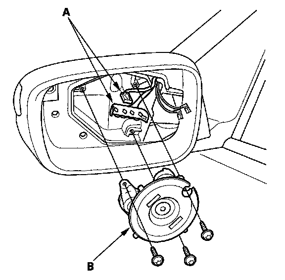
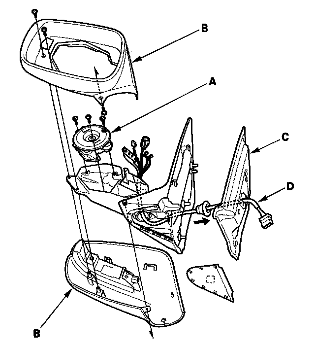

Power Mirror Motor: Service and Repair
Power Mirror Actuator ReplacementActuator Replacement
1. Remove the mirror holder.
2. Remove the three TORX screws using a tamperproof T10 TORX bit.

3. Remove the connectors (A) and the actuator (B).
4. Install the actuator in the reverse order of removal.
Actuator Harness Replacement
1. Remove the mirror holder.
2. Remove the power mirror.

3. Remove the three TORX screws from the actuator (A) using a tamperproof T10 TORX bit.
4. Remove the three TORX screws from the housing (B) using a tamperproof T10 TORX bit.
5. Disconnect the connectors from the actuator and the side turn signal light.
6. Remove the gasket (C) and the harness (D) from the power mirror.
7. Route the wire harness of the new actuator through the hole in the bracket and the gasket in the reverse order of removal.
8. Connect the connectors to the actuator and the side turn signal light securely.
9. Install the actuator, housing and the gasket in the reverse order of removal.
10. Install the power mirror on the door, and make sure the actuator, mirror defogger, and side turn signal light operation.